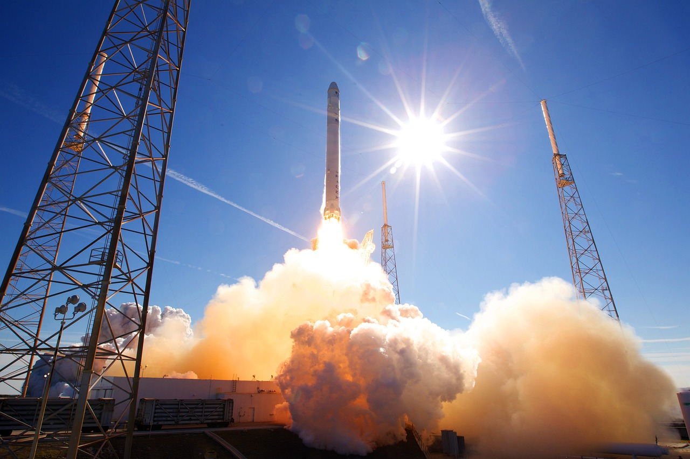

Spacecraft- Propulsion Systems
Spacecraft propulsion systems are critical for enabling space exploration and research. From traditional chemical rockets to more advanced ion thrusters, this topic examines the different types of propulsion systems used in spacecraft and their capabilities, as well as the challenges and opportunities associated with developing and implementing these systems.
Introduction
Spacecraft propulsion systems are essential for enabling space exploration and research. These systems provide the necessary thrust to launch spacecraft into orbit, maintain their trajectory, and maneuver in space.
Over the years, many different types of propulsion systems have been developed, each with its own advantages and limitations. In this blog post, we'll take a closer look at the various types of spacecraft propulsion systems, from traditional chemical rockets to advanced ion thrusters.
Chemical Rockets:
Chemical rockets are the most common type of spacecraft propulsion system used today. These rockets work by burning a fuel and oxidizer together to produce a high-velocity exhaust that propels the spacecraft forward. The most commonly used fuels are liquid hydrogen and liquid oxygen, although other fuels such as kerosene and solid rocket propellants are also used. Chemical rockets are powerful and reliable, but they are also heavy, expensive, and have limited fuel efficiency.
Electric Propulsion:
Electric propulsion systems, also known as ion thrusters, use electricity to ionize a gas (usually xenon) and accelerate the resulting ions to produce thrust. These systems are more fuel-efficient than chemical rockets, allowing spacecraft to travel longer distances and achieve higher speeds. However, they are also less powerful than chemical rockets and require more time to accelerate to high speeds. Electric propulsion systems are commonly used for deep space missions and for maintaining the orbits of satellites and space probes.
Nuclear Propulsion:
Nuclear propulsion systems use nuclear reactions to generate heat, which is then used to produce thrust. These systems are much more powerful and efficient than chemical rockets or electric propulsion, allowing spacecraft to travel much faster and farther. However, nuclear propulsion systems are also much more complex and expensive to develop and operate. Additionally, there are concerns about the safety and environmental impact of nuclear propulsion systems.
Solar Sails:
Solar sails are a type of propulsion system that uses the pressure of sunlight to produce thrust. These sails are made of a thin, reflective material that reflects the sunlight and generates a small amount of force. While solar sails are not as powerful as other propulsion systems, they are very lightweight, require no fuel, and can be used for very long duration missions. Solar sails are currently being used for missions such as the Planetary Society's LightSail 2.
Challenges and Opportunities:
Developing and implementing spacecraft propulsion systems is a complex and challenging task, requiring significant technological expertise and investment. However, the potential benefits of these systems are also significant.
Advanced propulsion systems could enable faster and more efficient space travel, as well as new scientific discoveries and commercial opportunities. Additionally, the development of propulsion systems could also lead to advances in other areas, such as energy generation and environmental sustainability.
Conclusion:
Spacecraft propulsion systems are a critical component of space exploration and research. From traditional chemical rockets to advanced ion thrusters and solar sails, there are many different types of propulsion systems that have been developed over the years, each with its own advantages and limitations. While developing these systems is challenging and expensive, the potential benefits are significant, and could lead to new discoveries and opportunities for humanity.